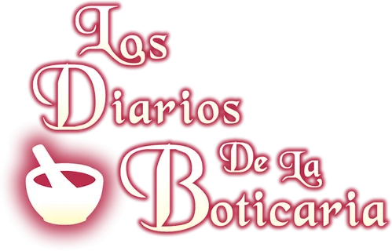

Maomao
Boticaria y probadora de venenos, curiosa y experta en plantas medicinales.
- Conoce remedios y venenos.
- Trabaja en el palacio interior.
- Investiga misterios con ingenio.

Medicina, misterios e intrigas en el palacio.
Una historia de medicina, misterios e intrigas en el palacio.
Ver personajesBoticaria y probadora de venenos en el palacio imperial.
Tres personajes unidos por los secretos, la medicina y la vida en la corte imperial.
Boticaria y probadora de venenos, curiosa y experta en plantas medicinales.
Administrador del palacio interior, distinguido y envuelto en intrigas.
Leal asistente de Jinshi y apoyo constante en sus tareas.
Las plantas pueden aliviar dolencias, aunque algunas esconden peligros. Maomao estudia sus propiedades con cuidado.
Hierba aromática conocida por sus usos tradicionales.
Raíz de aroma intenso usada en remedios y preparaciones.
Planta tóxica que Maomao reconoce y manipula con extrema precaución.
¿Tienes alguna pregunta sobre la historia o sus personajes?
Gracias por tu interés en Los Diarios de una Boticaria.